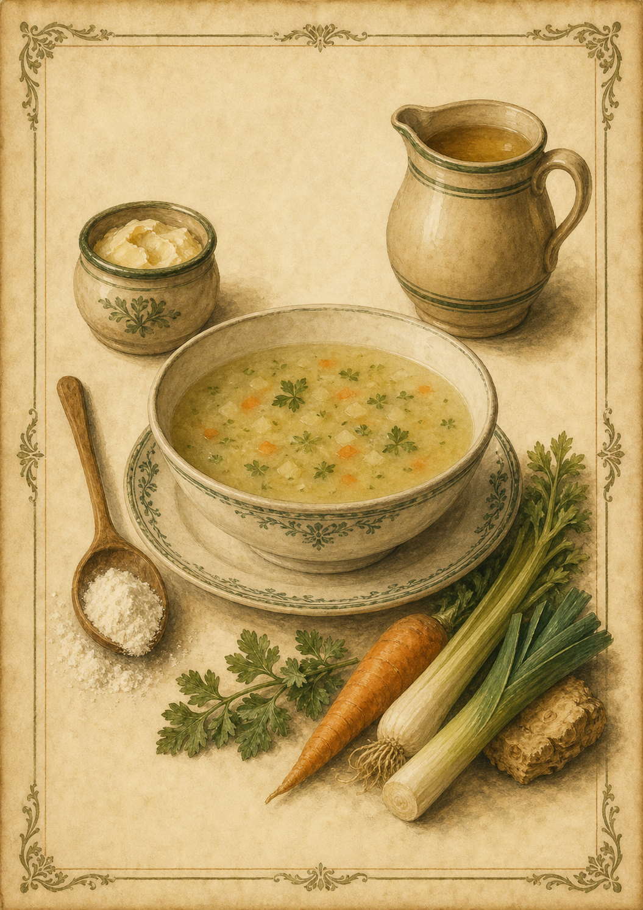

Gebundene Suppe
Eine einfache, mit Mehlschwitze gebundene Gemüsesuppe aus Friedas überlieferter Rezeptsammlung.

Originale Überlieferung
„80 grm Fett, kommen in einen Topf. Dieses läßt man heiß werden, dann rührt man 80 grm Mehl hinein bis es fein zart wird. Dann schüttet man 2 l Wasser oder Brühe langsam nach. Nachher kommt noch Suppengemüse, Salz und etwas Fett hinein.“
Moderne Übertragung
Das Fett wird erhitzt und mit dem Mehl zu einer feinen Mehlschwitze verrührt. Anschließend werden Wasser oder Brühe langsam zugegeben. Suppengemüse und Salz kommen hinzu; danach darf die Suppe köcheln, bis das Gemüse gar ist.
Zutaten
- 80 g Fett
- 80 g Mehl
- 2 l Wasser oder Brühe
- Suppengemüse
- Salz
- nach Bedarf etwas zusätzliches Fett
Zubereitung
- Das Fett in einem großen Topf erhitzen.
- Das Mehl einrühren und unter ständigem Rühren leicht anschwitzen, bis eine feine Mehlschwitze entsteht.
- Wasser oder Brühe nach und nach zugießen und dabei kräftig rühren, damit keine Klümpchen entstehen.
- Suppengemüse und Salz hinzufügen.
- Die Suppe sanft köcheln lassen, bis das Gemüse gar ist.